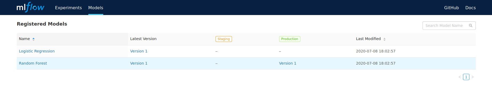

flowchart TD
subgraph MLflow
database[(Database)] <--> server(Server)
storage[(Storage)] <--> server
end
server <--> client(Client)
Model Versioning with MLflow
Keywords
MLflow, Model-Versioning, McNemar’s-Test, Machine-Learning
In this very first post we will talk about machine learning model versioning and more specifically machine learning classifier versioning.
Of course, one could simply compare accuracies ( or whichever metric you’re using ) on a separate test set and promote whichever classifier has a better value but that does not offer us the same guarantees as statistical tests.
For example, one may train two different classifiers on the same dataset and get the following results on a separate test set:
| True Label | Model 1 Prediction | Model 2 Prediction |
|---|---|---|
| A | A | B |
| A | A | A |
| B | A | A |
| A | A | B |
| A | B | B |
| B | B | A |
| B | B | B |
| B | A | B |
| A | A | A |
| A | B | A |
We can see that the first classifier has an accuracy of 60% and the second classifier an accuracy of 50%. If we were to stop here we would just say that the first classifier is better than the second one and that could be true, but can this result be trusted?
To verify that we construct the following confusion matrix:
| Model 2 Correct | Model 2 Wrong | |
|---|---|---|
| Model 1 Correct | 3 | 3 |
| Model 1 Wrong | 2 | 2 |
By comparing the off-diagonal elements, we can intuitively know that there isn’t much of a difference between the two classifiers. To make that more precise we can use statistical tests instead of just comparing numbers.
One such test is McNemar’s Test.
Before explaining McNemar’s Test and the different steps used to compare two machine learning classifiers, let’s first talk about MLflow.
MLFlow
MLflow is an open source platform for the machine learning life-cycle. It is currently composed of four components:
- MLflow Tracking: Used to record and query experiments: code, data, config, and results
- MLflow Projects: Used to package data science code in a format to reproduce runs on any platform
- MLflow Models: Used to deploy machine learning models in diverse serving environments
- MLflow Model Registry: Used to store, annotate, discover, and manage models in a central repository
It uses a classic client server architecture as depicted in the following diagram:
The Client, user, interacts directly with the Server and the Server in turn interacts with the Database (MySQL, MSSQL, SQLITE, or POSTGRESQL) and the Storage backend (Local or Cloud).
In this post we’re only interested in the last component: the Model Registry.
It is a centralized model store, set of APIs, and UI, to collaboratively manage the full life-cycle of an MLflow Model. It provides model lineage (which MLflow experiment and run produced the model), model versioning, stage transitions (such as from staging to production), and annotations.
A registered model can be in any one of the following stages: - None - Staging - Production - Archived
As can be seen in the following flowchart, a model starts, when first logged or registered, in the None stage and then transitions to the Staging stage, then to the Production stage and finally end its life-cycle in the Archived stage.
flowchart LR
none(None)
staging(Staging)
production(Production)
archived(Archived)
none --> staging
staging --> production
production --> archived
For simplicity’s sake we won’t consider other possible transitions (e.g. Staging -> Archived).
What the Model Registry does not take care of is automatically transition a given model to the appropriate stage and that is understandable because the conditions needed to do that depend on the actual application.
McNemar’s test
McNemar’s test is a non-parametric statistical test that can be used to compare two classification models by constructing a 2x2 contingency table, or confusion matrix, like the following:
| Model 2 Correct | Model 2 Wrong | |
|---|---|---|
| Model 1 Correct | a | b |
| Model 1 Wrong | c | d |
In order to test if there is a significant difference between the two models, we use only the off-diagonal elements, b and c, since the other elements tell us nothing about whether one model is better than the other or not.
McNemar’s test statistic is:
\[ Q = \frac{(b - c)}{b + c} \]
Which, for large values of b and c, follows a chi-squared distribution with 1 degree of freedom \(\chi_{1}^{2}\).
To more closely approximate the chi-squared distribution we can use the following definition instead which contains a continuity correction:
\[ Q = \frac{(|b - c| - 1)}{b + c} \]
If the result is significant, i.e. greater than a pre-defined significance level, usually set to 0.05 but can be changed depending on the use case, then we can conclude that the two models are significantly different from each other.
But it does not end there, we still have to determine which one of the two is better than the other one. For that, we can use one or a combination of the usual metrics: Accuracy, F-Score, False Positive Rate, etc.
If we apply the continuity corrected version of the test on our previous example we get as result 1.0 and can confidently say that there is no significant difference between the two classifiers.
Model Versioning Flow
Now that we have defined and explained all the required parts of the flow. We can assemble them into the following chart that shows the different steps taken to compare two different classification models:
graph TD
End-->title["Model Versioning Flow Chart"]
style title fill:#FFF,stroke:#FFF
linkStyle 0 stroke:#FFF,stroke-width:0;
Start((Start)) --> A
A(McNemar's Test) --> B{"P-value < α"}
B -->|No| End((End))
B -->|Yes| C(Compute<br>Accuracies)
C --> D{Model1 Accuracy<br><<br>Model2 Accuracy}
D -->|No| End
D -->|Yes| E(Deploy Model2)
E --> End
Here we use accuracy, but it could be replaced by other metrics such as False Positive Rate, False Negative Rate, etc.
Example
In this repository you can find example code in Python that shows how to use the previous flow to do model versioning for machine learning classifiers with MLflow.
One important thing that should always be done is to pin the random seed to ensure the experiment’s repeatability.
random_seed = 16
np.random.seed(random_seed)In the example, we start off by generating artificial classification data using scikit-learn’s make_classification helper function and then splitting it into a training and a testing set:
X, y = make_classification(
n_samples=10000,
n_classes=2,
n_features=20,
n_informative=9,
random_state=random_seed,
)
X_train, X_test, y_train, y_test = train_test_split(
X, y, train_size=0.8, test_size=0.2
)After that, we fit a Logistic Regression classifier, then register and log it into MLflow and finally move it to the Production phase:
with mlflow.start_run():
lr_model = LogisticRegression()
lr_model.fit(X_train, y_train)
y_pred = lr_model.predict(X_test)
accuracy = accuracy_score(y_test, y_pred)
mlflow.log_metric("accuracy", accuracy)
mlflow.sklearn.log_model(
lr_model, artifact_path="model", registered_model_name="Logistic Regression"
)
mlflow_client.transition_model_version_stage(
name="Logistic Regression", version=1, stage="Production"
)Then, we fit a Random Forest classifier, then register and log it into MLflow and finally move it to the Staging phase:
with mlflow.start_run():
rf_model = RandomForestClassifier()
rf_model.fit(X_train, y_train)
y_pred = rf_model.predict(X_test)
accuracy = accuracy_score(y_test, y_pred)
mlflow.log_metric("accuracy", accuracy)
mlflow.sklearn.log_model(
rf_model, artifact_path="model", registered_model_name="Random Forest"
)
mlflow_client.transition_model_version_stage(
name="Random Forest", version=1, stage="Staging"
)To simulate the fact that the model comparison may happen in another script we delete both trained model instances and load them back from MLflow:
del lr_model
del rf_model
lr_model_download_uri = mlflow_client.get_model_version_download_uri(
name="Logistic Regression", version=1,
)
rf_model_download_uri = mlflow_client.get_model_version_download_uri(
name="Random Forest", version=1,
)
lr_model = mlflow.sklearn.load_model(lr_model_download_uri)
rf_model = mlflow.sklearn.load_model(rf_model_download_uri)As a next step, we use both models to generate predictions on the test set. We use these predictions to compute each model’s accuracy and to create a contingency table that is finally used in a corrected version of McNemar’s Test to return a P-value:
y_pred_lr = lr_model.predict(X_test)
y_pred_rf = rf_model.predict(X_test)
accuracy_lr = accuracy_score(y_test, y_pred_lr)
accuracy_rf = accuracy_score(y_test, y_pred_rf)
contingency_table = mcnemar_table(y_test, y_pred_lr, y_pred_rf)
_, p_value = mcnemar(contingency_table, corrected=True)Finally we use the obtained P-value and the accuracies to decide whether we should deploy the Random Forest classifier to Production and archive the Logistic Regression classifier or not:
if p_value < significance and accuracy_lr < accuracy_rf:
mlflow_client.transition_model_version_stage(
name="Logistic Regression", version=1, stage="Archived",
)
mlflow_client.transition_model_version_stage(
name="Random Forest", version=1, stage="Production",
)We can then access the MLflow server’s dashboard and see that the Random Forest classifier’s version 1 is in Production and the Logistic Regression classifier’s version 1 was archived:

All that’s left now is to run this or similar code either on a schedule or as part of a training workflow each time a new classifier is trained and logged.
Conclusion
We have seen that thanks to the Model Registry component of MLflow we can have a pretty simple automated model versioning flow for classifiers. This flow can be and should be extended and made more complete, depending on the use case. For example, by using a second metric for when a tie happens in the first one.
I hope that you have learned at a thing or two from this post. If there are any mistakes or if you have questions please do not hesitate to reach out to me.